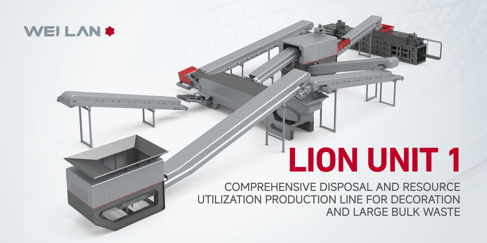

PET bottle sorting
Separate transparent, green, blue, and mixed-color PET streams with AI recognition and cyclic intelligent sorting.
- Input: post-consumer PET bottles
- Output: value-ready PET color streams
- Recommended system: AI optical sorting
Solutions by Material
Use material type, target output, available footprint, and automation level to match the right WEI LAN system configuration before quotation and layout planning.
Separate transparent, green, blue, and mixed-color PET streams with AI recognition and cyclic intelligent sorting.
Stabilize plastic recovery for mixed recyclables where manual sorting struggles with material purity and operating consistency.
Recover aggregates, metals, and light materials from construction, decoration, and demolition waste with integrated process control.
Handle oversized mixed waste with crushing, screening, magnetic separation, and air separation in a compact project footprint.
Process Integration
The product architecture covers preprocessing, counting and pricing, crushing, screening, magnetic separation, air separation, intelligent storage, optical sorting, baling, weighing, and remote control.

Case Studies
Use these compact references to compare waste streams, system direction, and expected output before requesting a detailed proposal package.
AI optical sorting configuration for PET, HDPE, PP, and mixed recyclable plastics where stable category separation is the core requirement.
Integrated crushing, screening, magnetic separation, and air separation for recycled aggregate and material recovery projects.
Modular recovery center concept combining sorting, weighing, reporting, and remote management for mixed municipal waste streams.
Solution Inquiry
Share your material stream, target output, available footprint, and automation expectations. WEI LAN can match the right solution path and prepare a more focused proposal discussion.
Sales hotline: +86 137 8001 2268 / +86 180 6737 7770